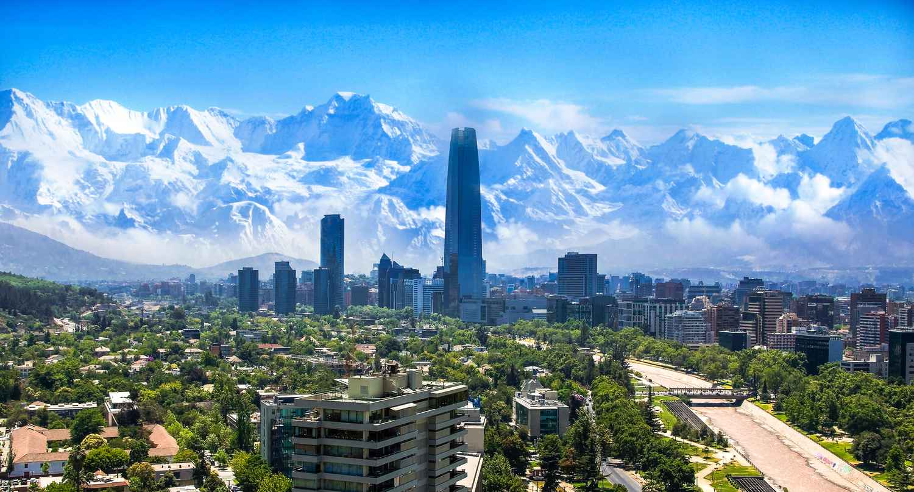
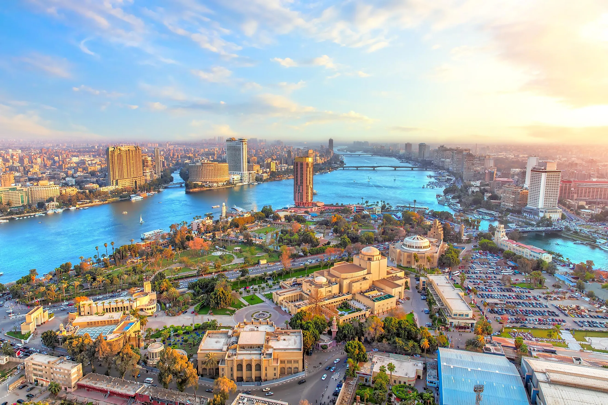
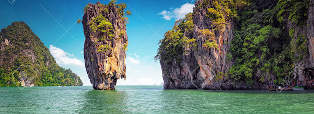

Europe
Europe is home to a diverse range of countries, each with its own unique culture, history, and attractions. From the ancient ruins of Greece and Italy to the grand palaces of France and the scenic beauty of Switzerland, Europe offers something for every traveler. Popular destinations include the historic cities of Rome, Paris, and Berlin, the charming villages of the Netherlands, and the vibrant beaches of Spain. Countries like Germany, the United Kingdom, and the Netherlands are known for their strong economies and rich cultural heritage, while Scandinavian nations like Sweden, Norway, and Denmark offer stunning landscapes and high-quality living standards. Whether you are interested in history, art, nature, or modern cities, European countries provide an incredible variety of experiences to explore.
Asia

Asia is the largest and most diverse continent, offering a rich blend of cultures, landscapes, and traditions. From the bustling cities of Japan, China, and India to the serene beaches of Thailand and Bali, Asia has something for every type of traveler. Countries like Japan and South Korea are known for their technological advancements and unique blend of tradition and modernity. India offers vibrant festivals, rich history, and diverse cuisines, while Southeast Asian countries like Vietnam, Indonesia, and Malaysia showcase beautiful landscapes and tropical climates. In the Middle East, nations like the UAE and Saudi Arabia offer a mix of modern architecture and rich cultural heritage. Asia vast diversity, from ancient temples to futuristic skylines, makes it an unforgettable travel destination.
South America
South America is a continent full of natural beauty, vibrant cultures, and rich history. From the breathtaking Amazon rainforest to the majestic Andes mountains, South America offers diverse landscapes that captivate travelers. Popular destinations include Brazils lively beaches and iconic Carnival, Argentinas tango-filled streets and Patagonias rugged terrain, and Perus ancient Machu Picchu. Countries like Colombia and Chile are known for their stunning natural wonders, while cities like Rio de Janeiro and Buenos Aires offer vibrant nightlife and cultural experiences. South America is a treasure trove of adventure, history, and colorful traditions, making it a must-visit for any traveler.
Africa
Africa is a continent of incredible diversity, with vast landscapes ranging from deserts to lush rainforests, and rich cultures that span centuries. From the pyramids of Egypt and the ancient ruins of Ethiopia to the wildlife safaris of Kenya and Tanzania, Africa is full of unique experiences. South Africa boasts vibrant cities like Cape Town, while Morocco offers bustling markets and stunning architecture. In West Africa, countries like Ghana and Senegal highlight lively music, dance, and traditions. The continent is also home to diverse wildlife, including the "Big Five" in national parks across Kenya, Zimbabwe, and Botswana. Whether you're exploring historic sites, experiencing local cultures, or embarking on a safari adventure, Africa offers unforgettable journeys.
Oceania
Oceania is a region of stunning natural beauty, consisting of island nations and territories spread across the Pacific Ocean. Australia, the largest country in the region, is known for its diverse landscapes, from the Great Barrier Reef to the Outback and vibrant cities like Sydney and Melbourne. New Zealand offers breathtaking mountains, lakes, and Maori culture. The Pacific Islands, including Fiji, Samoa, and Tahiti, are famous for their pristine beaches, crystal-clear waters, and unique Polynesian traditions. Oceania is a paradise for nature lovers, adventure seekers, and those wanting to experience a laid-back island lifestyle. With rich cultural heritage and unparalleled natural beauty, the countries of Oceania provide a perfect escape for travelers.